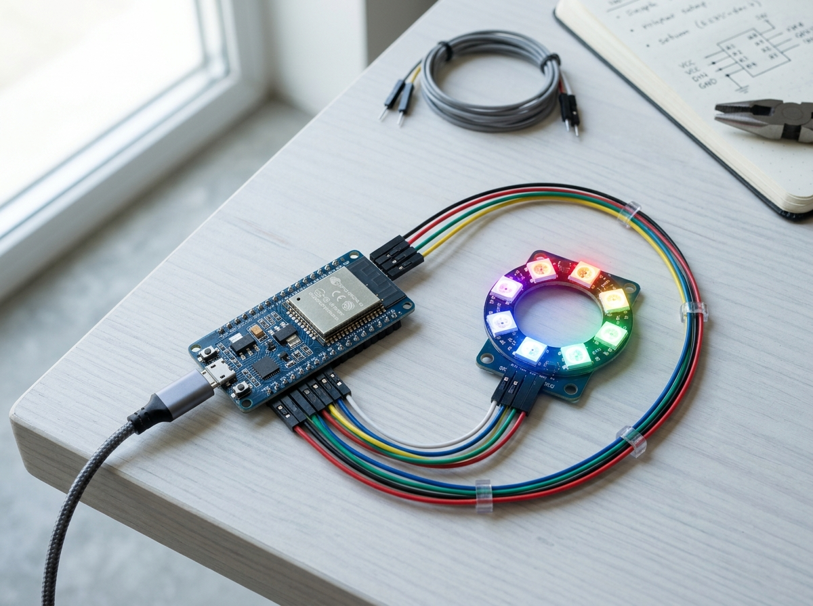

1) LEDS — Lumières et couleurs RGB
Découvrir la commande de DEL simples et d'un anneau NeoPixel : allumer une couleur précise, utiliser des teintes aléatoires et créer une animation de chenillard en boucle.
Broche 14 · Bibliothèque NeoPixel · Boucle forever